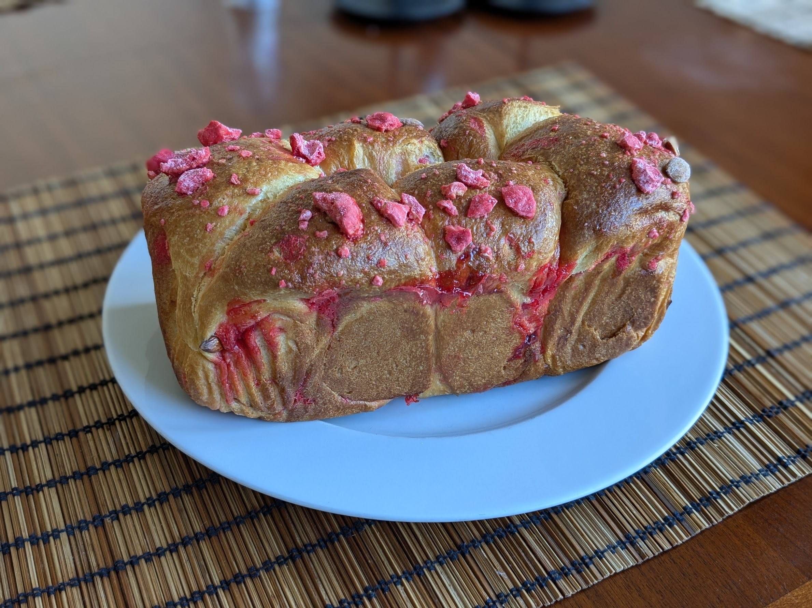

Brioche aux pralines

Pour une bonne grosse brioche, ou une brioche de taille normale et quelques mini-brioches en rab' :
- 260g de farine
- 135g de beurre
- 3 œufs
- 15g de levure boulangère fraîche (au rayon frais du supermarché, ou en demandant à ta boulangerie)
- 35g de sucre
- 150g de pralines, voire même 200g si on est très gourmand
- Une demi-cuillère à café de sel
- Un peu de lait et d'œuf en plus, en quantités égales
- Battre les œufs vite fait. Les mettre dans un bol de robot, ajouter la levure, le sucre, puis la farine et le sel, et utiliser le crochet du robot pour pétrir le tout à vitesse moyenne. Pendant ce temps, faire fondre le beurre.
- Lorsque le beurre est fondu, l'ajouter et continuer à pétrir pendant une demi-heure. De temps en temps, racler le bol pour incorporer les petits bouts de pâte ou de farine collés sur la paroi.
- Arrêter de pétrir lorsque la pâte cesse de coller, qu'on l'entend claquer sur les bords du bol, et qu'on peut la prendre en entier avec le crochet. À ce stade-là, elle brille, et on peut l'étirer avec les mains et voir au travers.
- La laisser dans le bol dans une pièce chaude (genre la salle de bains après une douche, température idéale : 30°C) pendant environ une heure pour qu'elle grossisse.
- Mettre la pâte au frigo pendant une nuit.
- Concasser grossièrement les pralines rouges. Étaler la pâte sur un plan de travail, et disposer la plupart (disons 80-90%) des pralines dessus.
- La couper en 8-10 morceaux, et former des boules grossièrement en repliant de sorte à ce que la majorité des pralines se retrouve à l'intérieur (si il y en a un peu qui sortent, c'est pas très grave). Disposer les boules dans un moule à cake ou un plat à four à bouts assez hauts, recouvert de papier sulfurisé. Il faut qu'elles se touchent mais qu'elles aient de la place pour bien grossir.
- Faire bouillir un litre d'eau, et le mettre dans un bol au fond du four, puis mettre le plat dans le four éteint environ une heure. Il faut que ça grossisse bien.
- Mélanger du lait et de l'œuf en quantités égales. Sortir la pâte du four, et faire préchauffer le four à 160°C.
- Badigeonner la pâte du mélange lait/œuf, ajouter les pralines restantes sur le dessus, et enfourner environ une demi-heure. C'est cuit quand la couleur sur le dessus est joliment brune ; si on veut être sûr, on peut planter une aiguille en métal dedans, il faut qu'elle ressorte non seulement sèche mais aussi bien chaude, à la limite du supportable si on la porte à ses lèvres.
Remarque : comme pour la brioche tressée, je ne conseillerais pas de la faire sans robot qui puisse pétrir une pâte, à moins d'être motivé pour pétrir manuellement une heure et demie ou plus.
Remarque 2 : on peut aussi faire cuire des boules individuelles dans des ramequins beurrés (par exemple si le plat principal est un peu trop petit pour contenir toutes les boules). C'est tout mignon et ça cuit un peu moins longtemps, 25 minutes environ.